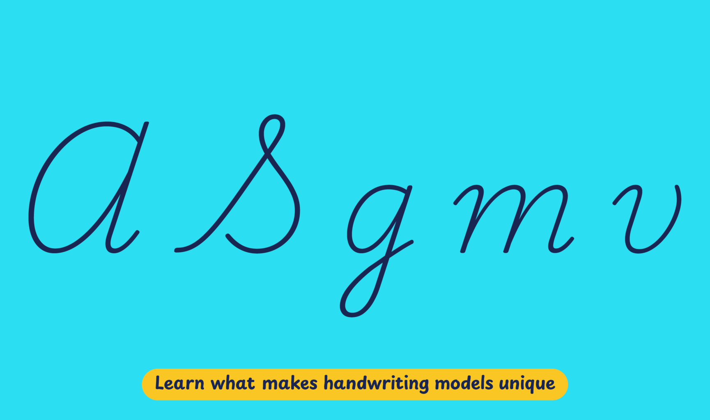

In the absence of a unified national approach, elementary education in the United States is supported by several private companies that espouse different approaches to teaching handwriting. According to American handwriting expert Kate Gladstone, it is difficult to confidently determine which handwriting models are most commonly taught in the country, but among the most widespread are Zaner-Bloser and D’Nealian, both following a traditional style, and Handwriting Without Tears. Two other programs featuring modern cursive models — Getty-Dubay and Barchowsky Fluent Hand — are rapidly gaining interest as writing models not only for children but also for adults seeking to improve their handwriting.
Playwrite USA Traditional is a variable font with a weight range from Thin (100) to Regular (400), and supports over 150 Latin-based languages.
To contribute, see github.com/TypeTogether/Playwrite.
This style follows the traditional American style of Zaner-Bloser and D'Nealian, featuring a slanted continuous cursive. Capital letters vary in appearance, with some like 'I', 'H', and 'G' being more decorative, and others such as 'A', 'N', and 'M' maintaining a cursive style. The construction of the letters appears fast and is complex in certain characters. Ascenders and descenders include loops to facilitate continuous writing, with mirrored loops in 'p' and 'q' enhancing the flow. Consistent with other English-speaking models, the entry strokes for 'v' and 'w' are distinctly different.

Playwrite USA Traditional appears in font menus with a two-letter country code ‘US’ and a the ‘Trad’ abbreviation, Playwrite US Trad. It features four styles: Thin, ExtraLight, Light, and Regular.
The download .zip file includes the variable font and standard static ttf fonts for each style.
The Playwrite school fonts are based on the findings of Primarium, a groundbreaking educational effort that documents the history and current practice of handwriting models taught to primary school students worldwide. This typographic engine serves teachers, educators, and parents by generating localized libre fonts. These Playwrite fonts are complemented by Playpen Sans, an informal and fun typeface designed for annotations, instructions, and student notes – that also includes emojis.
For more information about the Primarium project, visit primarium.info and to learn more about handwriting education in the United States of America, see primarium.info/countries/united-states-of-america
Windows: Download the font file to your computer. Navigate to where you saved the font file and double-click it to open. Click the "Install" button at the top of the font preview window. The font is now installed and ready to be used across your apps.
macOS: After downloading the font file to your Mac, right-click it in Finder and select "Open With" > "Font Book". Then, click "Install Font" in the font preview window that pops up. The font is now installed and ready to be used across your apps.
The Playwrite font family uses complex OpenType features to generate connected writing. Some common applications require these features to be manually activated.
Note: This font family doesn't include Bold or Italic styles, so please avoid applying them in font editors. If you use the common 'B' and 'I' buttons, you will automatically generate low-quality styles.
Microsoft Word: Go to Format in the Menu bar, select Font, and then the Advanced tab. Activate "Contextual Alternates" and "Kerning for fonts below" to apply these settings to all text sizes.
LibreOffice: To select the different styles, go to Format in the Menu bar, select Character, and use the Typeface menu.
Adobe InDesign: Open the Paragraph Panel and select Adobe "World-Ready Paragraph Composer" from the contextual menu.
Adobe Illustrator: Navigate to Preferences > Type, check the "Show Indic Options" box, and close preferences. Then open the Paragraph Panel and select "Middle Eastern Composer" from the contextual menu.
Adobe Photoshop: Access the Paragraph Panel, then choose "World-Ready Layout" from the contextual menu.
The above instructions are also available in PDF format here